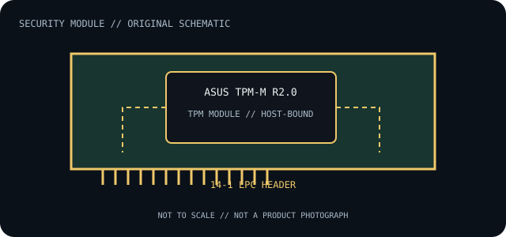

[ INDIVIDUAL COMPONENT // TRUSTED COMPUTING ]
ASUS TPM-M R2.0
Discrete motherboard Trusted Platform Module accessory implementing TPM 2.0 functions through the host platform’s TPM interface. This is a model-specific module, not a standalone cryptographic accelerator.

IDENTIFICATION: Confirm the printed part number, revision and host-board model. The connector, TPM generation, protocol transport and firmware support below are separate compatibility constraints.
Specifications and compatibility limits
| Catalog subcategory | Security coprocessors |
|---|---|
| Exact model / part identifier | TPM-M R2.0 |
| TPM protocol / command interface | TCG TPM 2.0 command interface over the module’s LPC connection; platform firmware exposes TPM services to the OS. It is not a general-purpose crypto API or network card. |
| Physical connector / transport | 14-1 pin LPC-style header module. The missing/keyed position and board pin assignment must match the exact ASUS motherboard manual; pin count alone does not establish compatibility. |
| Host compatibility limit | Only ASUS motherboard models whose specification/support documentation lists TPM-M R2.0 or the matching discrete TPM interface. The host must expose the appropriate LPC TPM header and BIOS/UEFI support; it is not a PCIe card or universal 14-pin adapter. |
| Firmware / OS compatibility limit | TPM 2.0 command support is mediated by board firmware and the OS TCG stack. BIOS settings and available TPM firmware are board/model dependent; do not cross-flash or assume the module can be upgraded independently. |
Installation, firmware and archival notes
- Before installation, record the module label/revision, host motherboard or server model, board revision, BIOS/UEFI version and TPM mode. Check the host’s own support list and installation diagram.
- Use ESD precautions and the documented module orientation. A physically fitting header may have different LPC/SPI signaling, pinout or voltage; never hot-plug a motherboard TPM module.
- TPM clear, replacement, firmware changes or mode changes can invalidate keys sealed to the previous TPM state. Back up recovery keys and follow the platform owner’s documented recovery procedure before service.
- This is a TPM, not a general-purpose cryptographic coprocessor or HSM: do not assume it offers PCIe/USB/network connectivity or vendor-specific bulk crypto APIs.
Where a manufacturer no longer publishes a current manual, preserve the source revision and verify the hardware against the original host platform before use.
Manufacturer and standard sources
- ASUS — TPM-M R2.0 support and knowledge baseManufacturer documentation for module identification and host/platform limitations.
- ASUS — TPM-M versus TPM-SPI compatibility and supported-product guidanceSeparate ASUS compatibility reference for choosing the correct module family and supported host.
- TCG — TPM 2.0 Library SpecificationStandards reference for the TPM generation and command model; it does not certify this module’s electrical or platform compatibility.
Source scope is explicit: manufacturer documents identify the part and host constraints; TCG documentation defines protocol generation. Standards compliance does not guarantee a particular board/firmware combination.